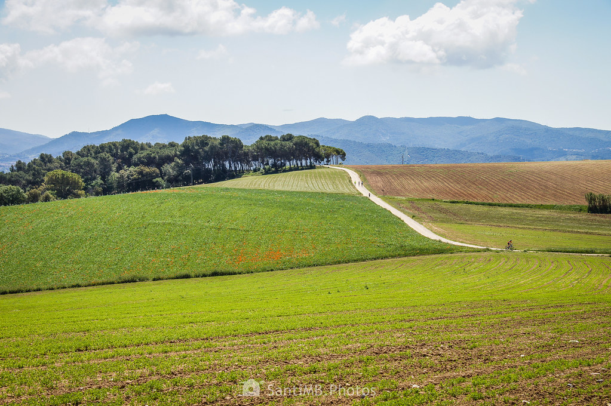
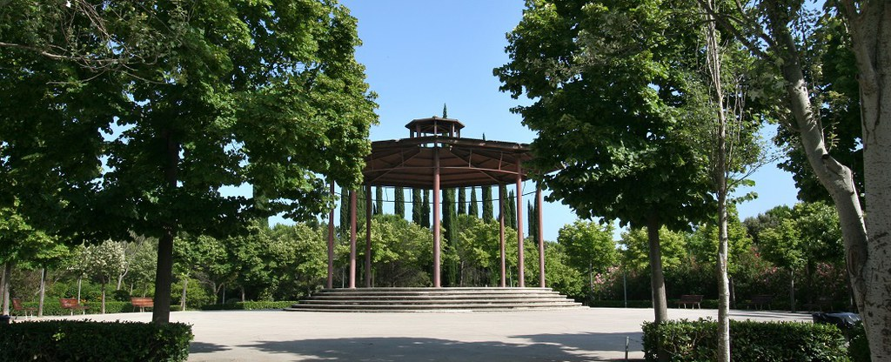
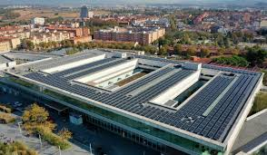
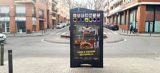
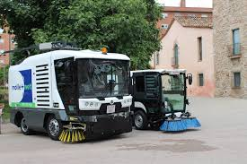
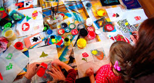

Galería de Imágenes
Descubre los paisajes naturales, proyectos ambientales y eventos relacionados con la sostenibilidad organizados por el Ayuntamiento de Mollet del Vallès.

Parque Natural de Gallecs
Un entorno natural que ofrece paisajes espectaculares y biodiversidad única.

Nuevo Parque Sostenible
Diseño ecológico con materiales reciclados y ahorro de recursos.

Paneles Solares
Instalaciones solares para reducir emisiones y promover energías limpias.

Punto de Reciclaje
Facilita el reciclaje para los ciudadanos con puntos accesibles.

Jornada de Limpieza
Evento comunitario para mantener los espacios públicos limpios y cuidados.

Taller de Reciclaje
Iniciativa para enseñar a niños la importancia del reciclaje.